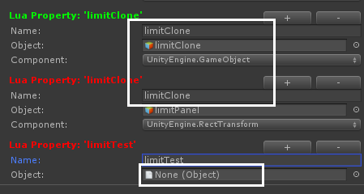
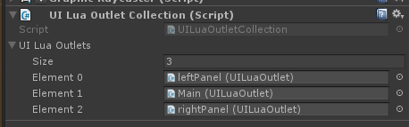

在KSFramework中，提供两种方式进行控件绑定：
- 通过代码手工实现控件的绑定
- 通过拖拽的方式绑定(LuaOutlet)
本篇讲解通过拖拽实现控件的绑定
拖拽绑定控件有以下几个规则：
在当前UI中，不允许出现相同的Name，否则Name用红色提示，因为用Name做的key
当Object为空时(未赋值)，用红色进行提示
LuaOutlet 拖拽绑定控件
在KSFramework中，可以在Editor中编辑UI的时候拖拽绑定控件，然后在UI代码中使用self.xxx进行引用，
比如：self.txtTips，就指向txtTips这个Object，类型为UnityEngine.UI.Text
self.txtTips.text = "这是给文本赋值"

每组包含三个变量：
Name：在Lua代码访问的变量名
Object：指向Unity的Object
ComponentType：Unity中的type，下拉列表可选择你需要的Type
在代码里引用拖拽的控件
在Editor中对控件绑定之后，在UI代码可以直接使用self.xxx进行引用，比如：
self.txtTitle = "标题文字"
self.btnLogin.onClick:RemoveAllListeners()
txtTitle和btnLogin 是在OnInit中对变量进行赋值，调用luaTable.Set，压入self作用域中。
实现代码可查看：LuaUIController.SetOutlet
可视化查找引用丢失
在代码中通过路径查找控件，而如果这个控件后来因于UI的结构修改而被删除了，或者美术、策划调整了UI层级结构，这个路径就找不到对应的控件，从而变量变成了Null， 程序对变量的访问就会引发NullReferenceException。 如果经常出现这种问题的话，让技术同学去检查路径是一种浪费不必要的时间。
而outlet则提供可视化的方法，在Inspect面板会以红色标识丢失的引用，和具有同名的变量。

多个outlet
当UI界面比较复杂时，如果全部的控件都绑定在一个outlet，那么后续的维护成本大，不易查找到指定的控件。，我建议是界面的每个块级元素使用一个outlet，或者以某个功能点划分，或者以区域划分(顶部，中部，左侧，右侧)，每个界面由多个outlet组成一个LuaOutletCollection
